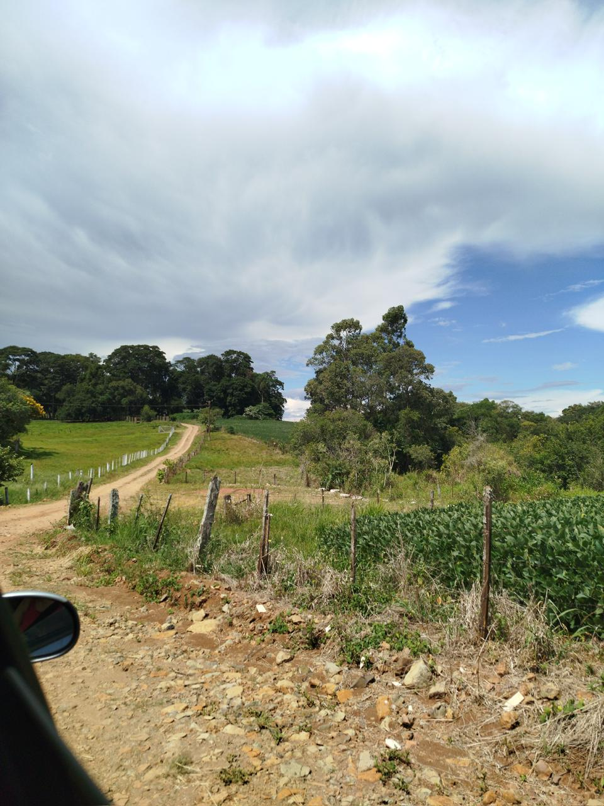

Transformações na Área Rural
O meio rural brasileiro passa por mudanças importantes. A combinação entre inovação e tradição tem ampliado a autonomia das comunidades sem deixar de respeitar o meio ambiente.
Projetos educacionais no campo têm sido essenciais, oferecendo formação adequada à realidade rural e mantendo os jovens no interior.
Com tecnologias como internet rápida, sistemas inteligentes de irrigação e máquinas modernas, surge uma nova geração mais capacitada e conectada ao futuro.